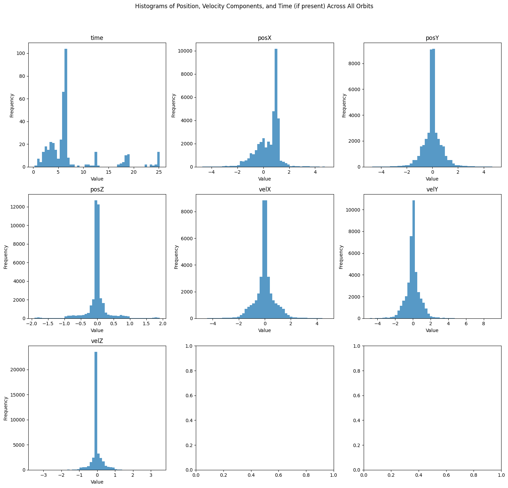
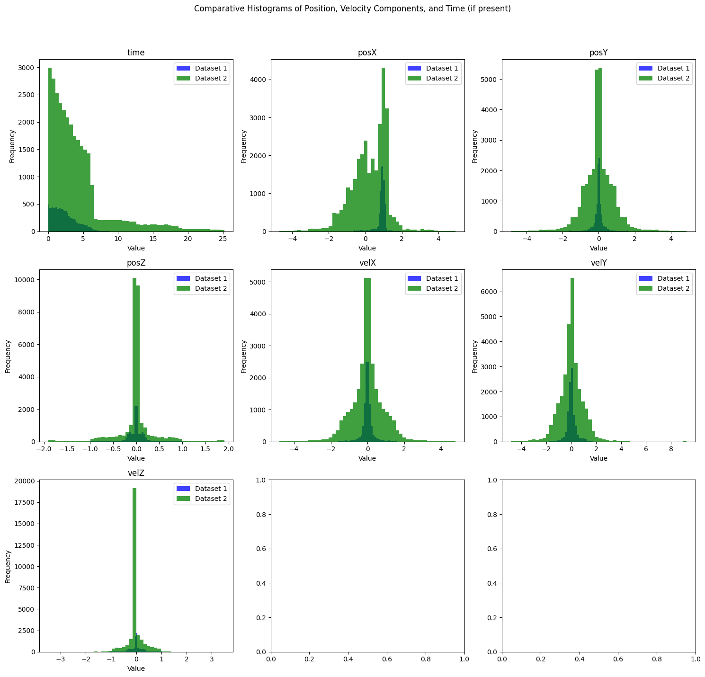
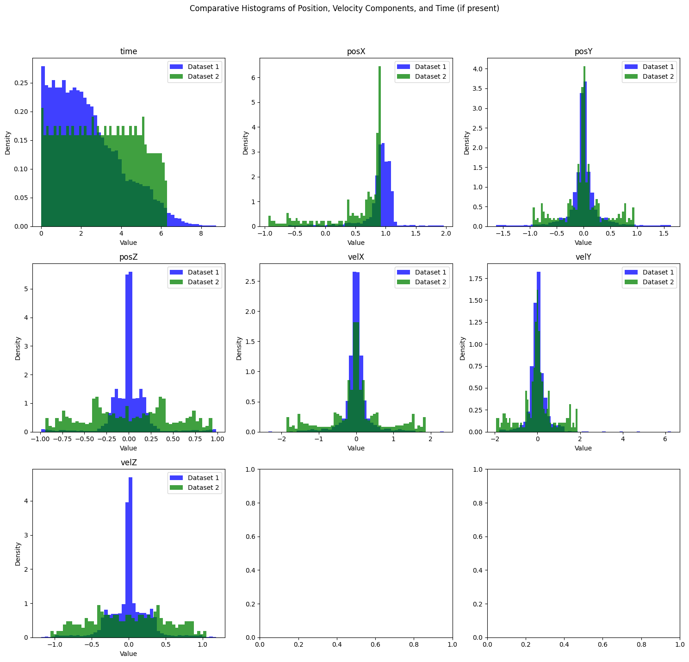

from orbit_generation.data import get_example_orbit_dataStatistics
Scripts to generate statistics out of orbit data
orbit_data = get_example_orbit_data()
orbit_data.shape(400, 7, 100)Simple statistics
calculate_overall_spatial_statistics
calculate_overall_spatial_statistics (orbits:numpy.ndarray)
Calculate the overall min, mean, max, and percentile statistics for each scalar (position and velocity in X, Y, Z) across all time instants and orbits.
| Type | Details | |
|---|---|---|
| orbits | ndarray | Array of shape (number_of_orbits, 6 or 7, number_of_time_instants) containing orbit data |
| Returns | ndarray |
orbits = np.array([
[[1, 2, 3], [2, 3, 4], [3, 4, 5], [4, 5, 6], [5, 6, 7], [6, 7, 8]], # Orbit 1
[[4, 4, 4], [3, 4, 5], [4, 5, 6], [5, 6, 7], [6, 7, 8], [7, 8, 9]] # Orbit 2
])
# Call the function to calculate statistics
stats = calculate_overall_spatial_statistics(orbits)
# Define the expected values for each statistic
expected_stats = np.array([
[1, 3, 4, 2.25, 3.5, 4], # posx
[2, 3.5, 5, 3, 3.5, 4], # posy
[3, 4.5, 6, 4, 4.5, 5], # posz
[4, 5.5, 7, 5, 5.5, 6], # velx
[5, 6.5, 8, 6, 6.5, 7], # vely
[6, 7.5, 9, 7, 7.5, 8] # velz
])
# Test each statistic for each scalar
for i, scalar_name in enumerate(['posx', 'posy', 'posz', 'velx', 'vely', 'velz']):
test_eq(stats[i, 0], expected_stats[i, 0])
test_eq(stats[i, 1], expected_stats[i, 1])
test_eq(stats[i, 2], expected_stats[i, 2])
test_eq(stats[i, 3], expected_stats[i, 3])
test_eq(stats[i, 4], expected_stats[i, 4])
test_eq(stats[i, 5], expected_stats[i, 5])calculate_per_orbit_spatial_statistics
calculate_per_orbit_spatial_statistics (orbits:numpy.ndarray)
Calculate per-orbit min, mean, max, and percentile statistics for each scalar (position and velocity in X, Y, Z) across all time instants.
| Type | Details | |
|---|---|---|
| orbits | ndarray | A numpy array of shape (number_of_orbits, 6 or 7, number_of_time_instants) containing orbit data |
| Returns | ndarray |
Plot Time
plot_time_increments
plot_time_increments (orbit_dataset:numpy.ndarray, orbits_to_plot:Optional[List[int]]=None, show_legend:bool=True)
Plots the time as a function to visualize how it increments for each orbit.
| Type | Default | Details | |
|---|---|---|---|
| orbit_dataset | ndarray | The 3D numpy array representing the orbits | |
| orbits_to_plot | Optional | None | Optional list of integers referring to the orbits to plot |
| show_legend | bool | True | Boolean to control the display of the legend |
| Returns | None |
Plot Histograms
plot_orbit_data_lengths
plot_orbit_data_lengths (orbit_data:Dict[int,numpy.ndarray], key_range:Tuple[int,int]=(1, 36072), dimension:int=0, bins:int=30, color:str='blue', plot:bool=True, title:str='Histogram of Orbits Time Steps')
Analyzes and optionally plots the distribution of time steps across multiple orbits. Returns the list of lengths if plot=False, otherwise displays histogram and returns None.
| Type | Default | Details | |
|---|---|---|---|
| orbit_data | Dict | Dictionary mapping orbit IDs to orbit data arrays | |
| key_range | Tuple | (1, 36072) | Range of orbit IDs to analyze (start, end) |
| dimension | int | 0 | Dimension of the orbit data to measure length |
| bins | int | 30 | Number of bins for histogram |
| color | str | blue | Color of histogram bars |
| plot | bool | True | Whether to plot the histogram |
| title | str | Histogram of Orbits Time Steps | Title of the plot |
| Returns | Optional |
plot_histograms_position
plot_histograms_position (data:numpy.ndarray, save_path:Optional[str]=None, last_time_elements:bool=True)
Plots histograms for the scalar values (position and velocity in X, Y, Z, and optionally time) across all orbits and time points. Handles arrays with 6 or 7 scalar dimensions, with the 7th being ‘time’.
| Type | Default | Details | |
|---|---|---|---|
| data | ndarray | The orbit data array of shape (num_orbits, num_scalars, num_time_points) | |
| save_path | Optional | None | Optional path to save the plot image |
| last_time_elements | bool | True | Whether to plot only the last elements of the time vectors |
| Returns | None |
plot_histograms_position(orbit_data)
plot_histograms_comparison
plot_histograms_comparison (data1:numpy.ndarray, data2:numpy.ndarray, label1:str='Dataset 1', label2:str='Dataset 2', save_path:str=None, normalize:bool=False)
Plots histograms for scalar values (position, velocity in X, Y, Z, and optionally time) from two datasets on the same chart with different colors. Supports both 6 and 7 scalar dimensions, with the 7th being ‘time’. Optionally saves the plot to a specified file path and can normalize histograms for relative comparison.
| Type | Default | Details | |
|---|---|---|---|
| data1 | ndarray | First orbit data array of shape (num_orbits, num_scalars, num_time_points). | |
| data2 | ndarray | Second orbit data array of shape (num_orbits, num_scalars, num_time_points). | |
| label1 | str | Dataset 1 | Label for the first dataset. |
| label2 | str | Dataset 2 | Label for the second dataset. |
| save_path | str | None | Optional path to save the plot image. |
| normalize | bool | False | Normalize histograms to show relative frequencies. |
| Returns | None |
orbit_data1 = orbit_data[:100]
orbit_data2 = orbit_data[100:]
plot_histograms_comparison(orbit_data1, orbit_data2)
orbit_data3 = orbit_data2[:5]
plot_histograms_comparison(orbit_data1, orbit_data3, normalize=True)